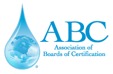

Allow Me To Introduce Myself
Hello! My name is Sarah Cronk. I was born and raised in Iowa. My father was a farmer and my mother a social studies teacher. Iowa is in my heart and soul. I know how hard it can be to raise a family on a middle class income. And I know that there's no better place to raise a family than in small-town Iowa. That's why I want to help Iowans with their small businesses and individual taxes.Education and Professional Certifications
I studied mathematics at the University of Northern Iowa where I earned a BA in mathematics. My success at the undergraduate level encouraged me to pursue a graduate degree when I moved to Virginia. I graduated from Old Dominion University in 2003 with a Masters of Science in accounting. After becoming licensed as a CPA which I was blessed to complete in 2006. I have since received the designations of Chartered Global Management Accountant, Certified Management Accountant, and Certified Financial Manager.
Head Start
I have served as a member of the Head Start advisory council since 2012 when I was elected to the board as a parent representative. In 2015, I was selected by the council to serve as the program's financial advisor. I have proudly served in this capacity for the last four years. Head State is a not-for-profit organization designed to promote the school readiness of children ages birth to five from low-income families including health, nutrition, social and other services determined by a family needs assessment.Association of Boards of Certification
I served as financial manager for the Association of Boards of Certification (ABC) from 2013 to 2018. ABC is an international not-for-profit organization which is dedicated to the stewardship and distribution of clean potable water worldwide. In 2018, I received the Chairman's Recognition Award for my outstanding performance and dedication to improving the financial position of the organization. 